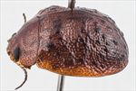
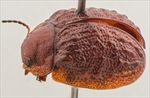
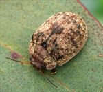
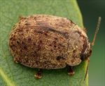
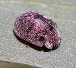
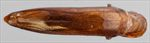
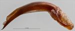
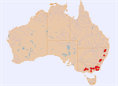

Click on images to enlarge
{kind=link}

Male, Glencoe, NE New South Wales
{kind=link}

Male, Blackheath, Blue Mountains, New South Wales
{kind=link}

Female, Jerrong, New South Wales
{kind=link}

Female, Tolmie, Victoria
{kind=link}

Female, Kosciuszco N.P., S.E. New South Wales
{kind=link}

Aedeagus, dorsal view (Jindabyne, S.E. New South Wales)
{kind=link}

Aedeagus, lateral view (Jindabyne, S.E. New South Wales)
{kind=link}

Distribution
Name
Trachymela baldiensis (Blackburn)
Reference specimen
2002-283a, Dinner Plains, Eastern Victoria.
Adult Description
Length: ♂ 6.7–8.3 mm (n=31), ♀ 6.6–8.5 mm (n=53).
Colouration:
- Head: uniformly mid-brown with black-tipped mandibles, rear of head behind eyes is black (only visible if head is extended forwards); antennomeres 1–4 light or straw-brown, 5–8 grading from that shade to dark-brown or black, 9–11 dark-brown or black.
- Pronotum: brown, concolorous with, or more frequently, fractionally darker than head, poorly defined maculae of slightly darker colouration may be present, most often adjacent to scutellum.
- Scutellum: completely black or (northern NSW specimens) brown, concolorous with pronotum, broadly edged in darker brown.
- Elytra: brown, concolorous with pronotum, with darker (even black) areas that coincide with the elevated interstices and verrucae, a prominent, roughly rectangular dark macula that straddles the elytral summit is often present, humeral callus is dark brown or black.
- Venter & Legs: variable, gula of head black, genae (southern specimens only) also black, thoracic sternites usually black in centre and brown laterally, less often completely black or brown, abdominal sternites light- to mid-brown, rarely dark brown, legs light-brown, very rarely darker, inner surface of epipleura variable, from completely brown to completely black.
- Cuticular Wax: light brown or greyish cuticular wax of uniform shade scattered somewhat unevenly over surface, rarely with traces of paler wax in VR3, VR5, VR7 and VR9 to give a faint impression of pale longitudinal streaks.
Morphology:
- Head: punctures variable, usually quite large (pd ≈ 2–2.5× ef) and somewhat unevenly and moderately densely distributed. Antennae relatively long (AL: ♂ 44–49% BL, ♀ 38–42% BL), distal segment slightly expanded and a little flattened.
- Pronotum: disc evenly curved transversely, then becoming noticeably explanate (males more so) near margins with a broad but shallow depression situated behind the outside edge of each eye, discal surface usually smooth or slightly rugose, puncturation clearly impressed, quite evenly distributed and moderately dense in discal area, becoming much coarser at lateral margins. Front margins quite thick at antero-lateral angle, joining the noticeably thinner lateral margin in a smoothly rounded right-angle, lateral margin continue briefly in a straight line then curve smoothly and gradually towards rear margin.
- Scutellum: smooth and unpunctured.
- Elytra: surface evenly curved transversely then becoming noticeably explanate at margins (especially southern specimens) with a distinct depression near middle of disc anterior to mid-line, punctures large and distinct, somewhat unevenly distributed, interstices rugulose and raised into prominent ridges and verrucae over much of the surface, verrucae are concentrated in area around scutellum and in posterior third of disc and may be pustular or extended into longitudinal ridges, a transverse line of verrucae is often present just behind elytral depression, a raised, quadrate and relatively smooth and flat surface is present around elytral summit and is usually traversed by rows of punctures, surface slightly discontinuous under humeral callus. Vertical extension of epipleura moderate (HCE/PW = 0.31–0.35).
- Venter: prosternal process narrow anteriorly, broadening towards posterior, lightly closed anteriorly, short setae present at rear of prosternal process, absent from mesoventrite, a single seta on anterior and median trochanter; front edge of metaventrite beveled, truncate; inner edge of posterior of epipleurae lacking setae.
Male Genitalia (Aedeagus):
- Dimensions: very long (LPE = 34–41% BL), needle shaped.
- Dorsal view: sides of shaft slightly sinuate, broadest at base, then narrowing very slightly before broadening again towards the widest point about 40% of length from apex, where sides converge very gradually towards apex in a roughly straight line, dorsal surface smoothly curved with very faint dorso-median channel usually present, dorsolateral channels long, tip protruding slightly.
- Lateral view: shaft almost evenly curved over most of length, thinning towards apex over final 20%, tip deflexed, flagellum thin and almost invariably broken off.
Immature Stages
Unknown.
Similar species
- Ta05: superficially, individuals of this species can look very much like typical specimens of Ta56 and their geographical distributions overlap extensively. Ta05 is more rounded in lateral view. Its verrucae tend to be slightly larger and more discrete than those of Ta56 and if a common, flat area is present at the elytral summit, is not well defined or black as that of Ta56. The host of these species are different, and their aedeagi are very different in shape.
- Ta17: another species that is superficially similar in sculpture. It is smaller than Ta56, their size distributions overlap just slightly. The common, black area at the elytral summit is very clearly rectangular in shape in Ta17. Both species have a lanceolate aedeagus, but that of Ta56 is much longer in relation to its width than that of Ta17.
Notes
- Taxonomy: The identification as Trachymela baldiensis (Blackburn) is by comparison with the type specimen in the Natural History Museum, London (BMNH).
- Distribution & Abundance: This species occurs in high-altitude areas from Victoria to Northern New South Wales and can be very abundant in some localities. The species is very variable in colouration throughout its range, although specimens from the north of the distribution tend to be considerably paler than those from the south. However, even in southern locations, a proportion of specimens are completely or almost completely lacking black colouration dorsally. These also differ slightly in the texture of the elytra, usually including longitudinally extended verrucae or ridges along VR3, VR5, and VR7 in the posterior third of the elytra. However, in other respects these specimens are essentially impossible to differentiate from more typical Ta56 and the aedeagus is essentially identical in both shape and size. These specimens are the same as the type specimen of Trachymela rosea (Blackburn).
- Host Associations: All host records are from monocalypt (Eucalyptus: Eucalyptus) species, with the snow gum (Eucalyptus pauciflora) its preferred host with 44 records (80%). Other records are from E. radiata (n=8), E. stellulata (n=1) and unidentified stringybarks (n=2).
- Morphological Variation: A specimen from Cann River, Victoria, differs in several characters from typical specimens, including an aedeagus that is relatively shorter, narrower and more sharply pointed at the apex and legs that are almost as dark as the rest of the ventral surface.
Copyright © 2026. All rights reserved.